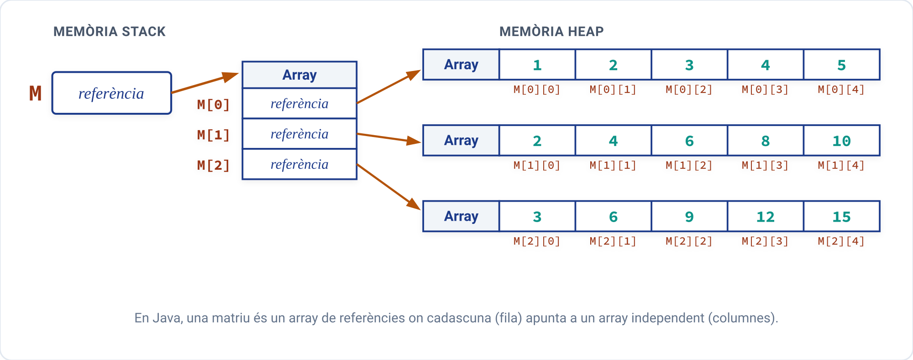
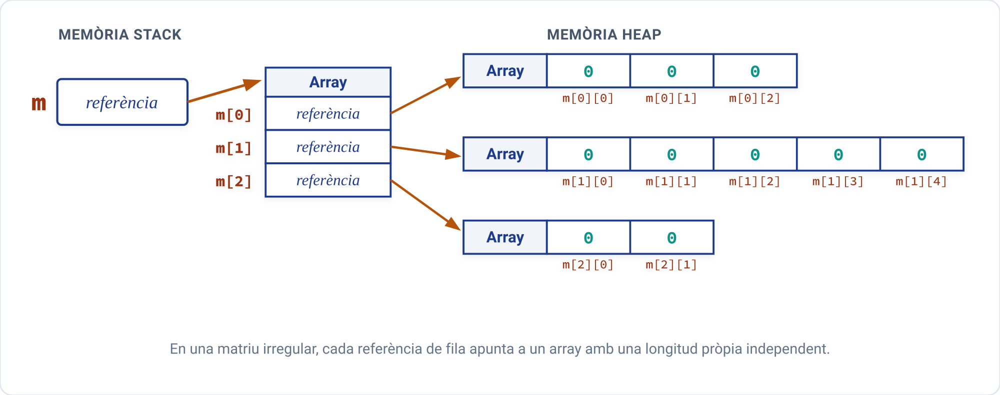

Matrius en Java (Arrays multidimensionals)¶
En moltes situacions del món real, les dades s'organitzen de manera natural en forma de taules amb files i columnes (com ara fulls de càlcul, taulells d'escacs o imatges pixelades). En programació, aquestes estructures s'anomenen matrius o arrays bidimensionals.
1. Concepte de matriu¶
La dimensió d'un array ve determinada pel nombre d'índexs necessaris per a accedir a cadascun dels seus elements:
- Un vector és unidimensional perquè només requereix un índex:
vector[i]. - Una matriu és bidimensional perquè requereix dos índexs:
matriu[fila][columna]. - El primer índex indica la fila (eix vertical, de \(0\) a \(files - 1\)).
- El segon índex indica la columna (eix horitzontal, de \(0\) a \(columnes - 1\)).
Visualment podem representar una matriu \(M\) de 3 files i 5 columnes de la manera següent:
| Índex de Fila | Columna [0] |
Columna [1] |
Columna [2] |
Columna [3] |
Columna [4] |
|---|---|---|---|---|---|
Fila [0] |
1 | 2 | 3 | 4 | 5 |
Fila [1] |
2 | 4 | 6 | 8 | 10 |
Fila [2] |
3 | 6 | 9 | 12 | 15 |
En aquesta taula, l'element M[1][3] correspon a la fila 1 i la columna 3, el valor del qual és 8.
1.1 Les matrius com a "arrays d'arrays"¶
En Java no existeixen les matrius bidimensionals pures com un bloc rígid de memòria 2D. En realitat, una matriu és un array de referències on cadascuna apunta a un altre array independent:

D'aquesta estructura interna es deriven dues propietats clau:
M.length: Retorna el nombre total de files (en l'exemple anterior,3).M[i].length: Retorna el nombre de columnes que té la fila concretai(en l'exemple anterior,5).
2. Creació i instanciació de matrius¶
Per a declarar i instanciar una matriu rectangular indiquem el tipus seguit de dos parells de corxets [][]:
Exemples:
int[][] vendes = new int[4][6]; // Matriu de 4 files i 6 columnes d'enters
double[][] temperatures = new double[3][4]; // 3 files i 4 columnes de reals
2.1 Matrius irregulars (Ragged Arrays)¶
Com que cada fila és un array independent, Java permet crear matrius irregulars o esglaonades, on cada fila té una quantitat diferent de columnes.
Per a crear una matriu irregular, només s'indica obligatòriament el nombre de files en la instanciació inicial:
// Creem una matriu de 3 files, deixant les columnes sense definir
int[][] m = new int[3][];
// Instanciem cada fila amb una grandària diferent
m[0] = new int[3]; // Fila 0: 3 columnes
m[1] = new int[5]; // Fila 1: 5 columnes
m[2] = new int[2]; // Fila 2: 2 columnes
Gràficament podem representar la disposició real en memòria d'aquesta matriu irregular de la manera següent:

3. Inicialització de matrius¶
3.1 Inicialització per defecte¶
Quan una matriu s'instancia amb new, tots els seus elements prenen automàticament el valor per defecte del seu tipus de dada: 0 per a enters, 0.0 per a reals, false per a booleans i null per a cadenes o referències.
3.2 Inicialització explícita (literals entre claus niades)¶
Podem declarar i inicialitzar una matriu assignant-li directament una llista de files entre claus, on cada fila és al seu torn una llista d'elements entre claus:
int[][] numeros = {
{6, 7, 5},
{3, 8, 4},
{1, 0, 2},
{9, 5, 2}
}; // Matriu rectangular de 4 files i 3 columnes
Aquest mateix format permet declarar de forma elegant matrius irregulars:
int[][] irregular = {
{6, 7, 5, 0, 4}, // 5 columnes
{3, 8, 4}, // 3 columnes
{1, 0, 2, 7}, // 4 columnes
{9, 5} // 2 columnes
};
4. Recorregut d'una matriu¶
Per a recórrer una estructura bidimensional s'utilitzen habitualment dos bucles for niats:
- El bucle exterior (índex
i) recorre cadascuna de les files. - El bucle interior (índex
j) recorre cadascuna de les columnes de la fila actual.
int[][] a = {
{1, 2, 3},
{4, 5, 6}
};
// Recorregut clàssic garantint compatibilitat amb matrius irregulars
for (int i = 0; i < a.length; i++) { // a.length = nombre de files
for (int j = 0; j < a[i].length; j++) { // a[i].length = columnes de la fila i
IO.print(a[i][j] + "\t");
}
IO.println(); // Salt de línia al final de cada fila
}
Recorregut de només lectura amb bucle for-each niat
Quan no necessitem modificar els valors ni emprar les coordenades \((i, j)\), podem utilitzar el bucle for-each niat:
5. Exemples pràctics resolts¶
Exemple 1: Cerca del valor màxim i mínim d'una matriu¶
Llegeix les dades d'una matriu de \(5\) files i \(4\) columnes, mostra la taula per pantalla i determina quin és l'element de major valor i quin el de menor, indicant les seues coordenades exactes (fila i columna).
Solució en Java
/*
* Programa que cerca el valor màxim i mínim d'una matriu
* guardant les posicions (fila i columna) de cadascun.
*/
void main() {
final int FILAS = 5;
final int COLUMNES = 4;
int[][] a = new int[FILAS][COLUMNES];
IO.println("Introducció d'elements de la matriu (" + FILAS + "x" + COLUMNES + "):");
for (int i = 0; i < FILAS; i++) {
for (int j = 0; j < COLUMNES; j++) {
IO.print("A[" + i + "][" + j + "] = ");
a[i][j] = Integer.parseInt(IO.readln());
}
}
// Mostrem la matriu en format tabular
IO.println("\nValors de la matriu:");
for (int i = 0; i < a.length; i++) {
for (int j = 0; j < a[i].length; j++) {
IO.print(a[i][j] + "\t");
}
IO.println();
}
// Inicialitzem el màxim i mínim amb el primer element
int major = a[0][0];
int menor = a[0][0];
int filaMajor = 0, colMajor = 0;
int filaMenor = 0, colMenor = 0;
for (int i = 0; i < a.length; i++) {
for (int j = 0; j < a[i].length; j++) {
if (a[i][j] > major) {
major = a[i][j];
filaMajor = i;
colMajor = j;
}
if (a[i][j] < menor) {
menor = a[i][j];
filaMenor = i;
colMenor = j;
}
}
}
IO.println("\nElement major: " + major + " -> Fila: " + filaMajor + ", Columna: " + colMajor);
IO.println("Element menor: " + menor + " -> Fila: " + filaMenor + ", Columna: " + colMenor);
}
Exemple 2: Suma de dues matrius \(3 \times 3\)¶
Llegeix dues matrius \(A\) i \(B\) de grandària \(3 \times 3\) de nombres enters, calcula la seua matriu suma \(S\) (on \(S[i][j] = A[i][j] + B[i][j]\)) i mostra el resultat per pantalla.
Solució en Java
/*
* Programa que realitza la suma component a component de dues matrius 3x3.
*/
void main() {
final int MIDA = 3;
int[][] a = new int[MIDA][MIDA];
int[][] b = new int[MIDA][MIDA];
int[][] suma = new int[MIDA][MIDA];
IO.println("--- Lectura Matriu A ---");
for (int i = 0; i < MIDA; i++) {
for (int j = 0; j < MIDA; j++) {
IO.print("A[" + i + "][" + j + "]: ");
a[i][j] = Integer.parseInt(IO.readln());
}
}
IO.println("\n--- Lectura Matriu B ---");
for (int i = 0; i < MIDA; i++) {
for (int j = 0; j < MIDA; j++) {
IO.print("B[" + i + "][" + j + "]: ");
b[i][j] = Integer.parseInt(IO.readln());
}
}
// Càlcul de la suma element a element
for (int i = 0; i < MIDA; i++) {
for (int j = 0; j < MIDA; j++) {
suma[i][j] = a[i][j] + b[i][j];
}
}
IO.println("\n--- Matriu Resultant (A + B) ---");
for (int i = 0; i < MIDA; i++) {
for (int j = 0; j < MIDA; j++) {
IO.print(suma[i][j] + "\t");
}
IO.println();
}
}
Exemple 3: Intercanvi de dues files d'una matriu¶
Donada una matriu \(4 \times 4\), sol·licita a l'usuari dos índexs de fila \(i\) i \(j\) i intercanvia tots els valors de la fila \(i\) pels de la fila \(j\).
Solució en Java
/*
* Programa que intercanvia dues files d'una matriu 4x4.
*/
void main() {
int[][] matriu = {
{3, 5, -1, 6},
{2, 6, 8, 2},
{12, 4, 1, 1},
{1, 6, 4, 2}
};
IO.println("Matriu original:");
imprimirMatriu(matriu);
IO.print("\nIndica la primera fila a intercanviar (0-3): ");
int fila1 = Integer.parseInt(IO.readln());
IO.print("Indica la segona fila a intercanviar (0-3): ");
int fila2 = Integer.parseInt(IO.readln());
// Comprovem que els índexs siguen vàlids
if (fila1 >= 0 && fila1 < matriu.length && fila2 >= 0 && fila2 < matriu.length) {
// Intercanvi element a element de les columnes
for (int k = 0; k < matriu[fila1].length; k++) {
int aux = matriu[fila1][k];
matriu[fila1][k] = matriu[fila2][k];
matriu[fila2][k] = aux;
}
IO.println("\nMatriu després d'intercanviar la fila " + fila1 + " amb la fila " + fila2 + ":");
imprimirMatriu(matriu);
} else {
IO.println("Índexs de fila no vàlids.");
}
}
void imprimirMatriu(int[][] m) {
for (int i = 0; i < m.length; i++) {
for (int j = 0; j < m[i].length; j++) {
IO.print(m[i][j] + "\t");
}
IO.println();
}
}